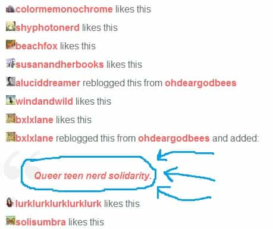

< < < Back
How Zoe Quinn Screwed Her Way Through The Video Game Industry – Return Of Kings
Before I begin in earnest, I would just like to give a deep, heartfelt thank you to TheInternetAristocrat, whose excellent video about Zoe Quinn is what exposed me to this typical example of a Feminist in the first place. Show him some love and visit his Youtube channel for more videos exposing the hypocrites our modern culture has turned into “heroes.”
I highly suggest you watch InternetAristocrat’s video first. I’ll post here, but in case it is removed by the time you read this you can likely find a mirror by Googling: Quinnspiracy Theory: The Five Guys Saga. If you open the video and see Jesse Ventura rambling at you, you’ve found the right one.
A Tale As Old As Time
Recently, a simpish man named Eron Gjoni was dumped by his girlfriend Zoe Quinn. The reason? Eron found out Zoe was cheating on him. As Eron explains it in his very long, very detailed diary entry about the whole affair:
We kinda broke up, but kinda not. She’d often message me to say she loved me and wanted to be with me again someday. She had eyes only for me, she said, and wanted me to say the same for her.
A few months later, around the end of June, we get back together (though this time she was worried about a mole among her facebook friend’s list, and so she didn’t make it facebook official until two weeks into the relationship, for a carefully vetted group of, by her estimate, roughly 200 friends or so). Before you know it we’re hitting on each other over tumblr again and sending cutesy couples photos whenever we missed each other.
[…]
This was for the most part a good time –
Until I found out she’d been cheating on me with her boss (Joshua Boggs).
Who is Joshua Boggs? A video game developer, whose most notable project so far is the game FRAMED, “AN AWARD WINNING NARRATIVE-PUZZLE GAME SET IN A NOIR COMIC BOOK WORLD” as its own site loudly proclaims. So a female employee cheats on her boyfriend with her married boss. Just another day in Beta paradise, right? Well Eron, paragon of truth, justice and the American way that he is, decided he wanted to tell Boggs’s wife about the man’s affair. I think most people would not have a problem with that. Yet for some very bizarre reason, he asked Zoe to help him get in contact with Boggs’s wife. Eron’s naivety of the female nature would be cute if he weren’t a grown man who should know better, but fortunately he saved the conversation and put it up on his site:
Shit, man, what happened?
Eron asks us, and continues:
I mean, obviously she cheated on me (a lot actually), but why would someone violate their own beliefs on something as important to them as sexual consent? And what’s with all this fear of someone going public? What happened to her strong principled stance of unflinching honesty? Or of owning up to mistakes? What happened to the paragon of virtue I fell in love and set out to help fix the world with?
Most of us could easily answer Eron’s questions.
- Zoe obviously never believed in sexual monogamy.
- Zoe is afraid of it going public because she doesn’t want to lose her job or otherwise face consequences for her actions.
- Zoe never had strong principles—she just told her boyfriend Eron that she did.
-
Sex is never a mistake. A mistake is using salt instead of sugar while baking. Screwing her boss was Zoe’s (now regretted) choice.
- The social justice paragon Zoe which Eron fell in love with never existed in the first place.
So we could just leave it right there, just another cautionary tale of 21st century relationships. After all; at its core this is just another sad story of cuckoldry involving the modern western male.
Yet something far more insidious came about because of this scandal. And to talk about it, we’re going to have to talk about just who Zoe Quinn is, and how far down the rabbit hole that is her vagina goes.
Who Is Zoe Quinn?
Zoe Quinn is a young(ish) white American woman living in the greater Boston area. Zoe is a social justice warrior and feminist video game developer with (as of this writing) exactly one game to her name: Depression Quest, a pay what you want to download game available on the Steam Client. Depression Quest is a rip-roaring ride of escapism that leaves one clinging to the edge of their seat and is not at all a boring, pretentious, and childish text based game about what it’s like to live with depression.
[A brief aside: I downloaded and played some of the game. Since I wasn’t mugged for my lunch money within fifteen minutes of playtime I concluded that Zoe’s depression privilege was no where near the level of mine. I declared her privileged shitlord scum and immediately ceased playing.]
As of late, Zoe has been busy “soliciting” money for some new (and very vaguely described) projects: when she’s not screwing the male heads of those projects, that is (we’ll get to that). Zoe, like most feminist game developers, enjoys talking about how the video games she isn’t busting her ass to make need more women in them, tweeting about how brave she is simply for being a woman experiencing some childish internet harassment, and mutilating her body with fringe fads so she can be hip and edgy.
Oh! And Zoe also proclaims herself as being gay. During a short review on her blog about a game featuring two lesbian teenagers, Zoe writes [Emphasis Billy’s]:
I’m so thankful that the story didn’t focus on the difficult parts of being a gay kid .
[…]
I’m just so happy that the game really just let these two girls be themselves first, be messy and awkward and teenagers together, and that they also just happened to be gay. Because what I try to remember best, and what really matters to me personally, is the nights she fell asleep on my chest, not the times people defaced my things with the word “dyke”.
[…]
I know it can be considered problematic or unrealistic, but after so much real world suffering [Zoey is referring to her gay kid suffering, not anyone else’s, here – Billy] this small private story feels like an oasis in a desert.
Yes, Zoe has gone through sooo much real world suffering, being a loud and proud dyke and all. That’s why she screws men, and all this controversy surrounding her came about because she cheated on her boyfriend with other men…wait a second. A boyfriend? Screwing men! I thought Zoe was gay! She said so in her own words! Or perhaps she just meant she was bisexual. Well, a quick Google Search of her ohdeargodbees blog looking for the word bisexual seems to return no posts where she refers to herself with the word bisexual (perhaps Google failed me on this one), yet Zoe clearly loves the dick. Proof?
There’s Zoe, eagerly canoodling with a man (who has a beard, so no pretending Zoe’s kissing a chick with her eyes closed). And what does she say when her boyfriend says “I love you”? Does Zoe say FUCK OFF PENIS CARRIER? Nope, she says “I love you too.” Zoe obviously isn’t gay. So why would she write a loving story about being a gay kid in a small town? Zoe can clearly flip a switch and instantly love men. That doesn’t sound like at all like a gay female to me. But think about it: what sounds more oppressed? Having had to grow up as a gay kid or a queer kid, or having grown up as a bisexual kid? If anything (and her actions haven’t proved she likes girls), Zoe is a bisexual: and let’s be honest, in this day and age who cares if a girl is bisexual? What American girl hasn’t been with another girl? Yet she consistently calls herself queer, a word dripping with hate speech connotations, to label herself as a victim.

Yes, queer teen solidarity indeed [that was taken from the comments on her gay kid blog post]. Kinda nice how Zoe-kins gets to have had an oppressed childhood as gaybo in a repressive redneck town, with all the LOUD PROUD LGBT street cred that comes with that, but now as a grown up she gets to fit in quite nicely with the normies by dating men and sleeping with men. Remember Eron Gjoni, the boyfriend who started this whole hurricane of hilarity in the first place? He and Zoe met on OKcupid, where Zoey was a WOMAN seeking a MAN. They had a 98% match rate. Zoe is totally queer.
Why did I just focus on that “I’m gay but only for the attention” aspect of Zoe? Because it perfectly shows that Zoe is a play pretend victim. She lies about what she is and what she has gone through, carefully manipulating wording where applicable, in order to get sympathy from people. She wants everyone to think she’s some poor, suffering woman beset upon in a cruel world, when in actuality she’s a callous pretender, a human with a black pit of a soul who will say any and everything in order to get people to feel sorry for her regardless of those who have actually suffered and actually need pity and understanding. And she sure isn’t afraid to tell it to people. What did Zoe talk about with Eron during their first date?
She seemed pretty cool; I didn’t talk much at first, and mostly listened as she related tales of adversities she’d overcome and how they’d shaped her as a person and fueled her determination to improve the world.
Lying for attention and pity is the strongest trait in Zoe Quinn’s character. Need further proof of her devious nature?
Zoe Quinn and internet misogyny
The Steam company has a kind of contest like system for video game developers. Developers create a game, upload it to Steam’s Greenlight project, and users vote on games they think are well made, fun, and worthy of being officially distributed.
While Zoe was developing her abysmal game Depression Quest, in order to get it onto Greenlight she alleged that she was receiving harassment from those magical folks over at Wizardchan, a website founded by a collective of men who thought the users of the infamous 4chan site were too normal for them (you can learn more about Wizardchan here). Wizardchan is a site exclusive for male virgins, so said harassment of Zoe took the form of good old misogyny.
Zoe lit the beacons, calling for aid and sharing far and wide the horrible misogyny she was suffering from simply for daring to be a female video game developer.
And the internet video game culture responded with a furious counterattack. Zoe’s woes were re-tweeted, re-blogged, re-everything else. Prominent feminists in the industry (including fellow feminist video game developer Anita Sarkeesian) called on gamers to fight misogyny by voting to Greenlight Depression Quest and bank rolling Zoe through various means. The biggest gaming news sites published articles talking about the death threats and harassment Zoe was receiving. The end result of Wizardchan’s campaigns of harassment (commonly nicknamed Raids for short in the trolling community) against her was that Zoe got a lot of press and financial support from a wide variety of sources which might have otherwise ignored her. Depression Quest was Greenlit to mass applause… by people who don’t play video games.
The only thing is, you know all that trolling and harassing? That misogynistic Wizardchan raid that so oppressed Zoe that she had to call the internet to arms? It didn’t happen. At least, not on a scale approaching anything close to what Zoe claimed. The users of Wizardchan put together an album challenging Zoe’s version of events, showing they had not organized any sort of raid and explaining that nobody on their board had created any sort of coordinated attacks against Zoe. You can go see proof of this by going through the album here. What Zoe experienced was some low level attacks by a very few individuals (who likely had nothing to do with the socially anxious wizards over at Wizardchan), which she seized upon to lie about and create sympathy and attention for herself, turning a few errant pot shots taken at her into something akin to the 1944 invasion of Normandy.
And it worked. Despite the fact that Depression Quest was widely reviled by gamers, many of whom questioned why Steam would Greenlight it on the games own page, Zoe’s game was released and widely praised by video game journalists and video game developers. The elites of video game culture, those who control what games get distributed and what is said about them through their mouth pieces in video game journalism, completely went against the opinions of the little people, the gamers, their customer base, the very people who are spending all their time buying and playing video games and maintaining the industry in the first place. By doing so, they [the video game industry] have effectively said: “The Feminist Imperative overrules the opinions of our customers.”
via Metacritic
And now for the screwing
Care of DeviantNation.com
As a result of her falsified misogyny crisis and the unwelcome release of Depression Quest, Zoe Quinn made several professional contacts in the video game industry, and began working with other developers: including Joshua Boggs. It was also around this time that Zoe met and began dating Eron Gjoni. It’s a good thing Eron found such a loving woman to date. Read some of Zoe’s own words about love and the human condition.
Here’s Zoe telling us about her philosophy on bad people:
I honestly believe in people. I feel like when people act shitty there’s always a series of reasons that led them to act that way and I will always have sympathy for the devil.
[…]
I really truly believe that anyone can be redeemed if we just figure out how. I feel like people are bad to each other because they’re hurting or ignorant or some other nasty thing that’s inside them, and I want to help figure out how to heal that or prevent it from happening to others while trying to take care of and support those who are hurt by other people’s shittiness.
Zoe Quinn screwed Joshua Boggs; video game developer, her boss and a married man, while she was dating Eron. She did not want to tell Boggs’s wife about her husbands affair.
Listen to her comfort a wannabe game developer:
Don’t let assholes stop you from doing what you love, if at all possible. Being weird is one more reason we need you here if you’re feeling up to it. Everyone is weird, come be weird with those of us who won’t treat you like shit for it.
[…]
Don’t feel the need to change yourself. Don’t be scared away outright. Don’t stop being you because some asshole can’t handle how rad you are. Don’t even heed any of this if it’s not good advice for you in particular. But if you do decide to walk this path, it doesn’t have to be alone, and it doesn’t have to be while bending to anyone’s will.
If you feel like joining us, we can do this together. No one has to be alone.
So was Eron an asshole who couldn’t handle Zoe’s rad self? Is that why Zoe screwed a video game journalist named Nathan Grayson, writer over at Kotaku, in order to get positive press for herself and her projects, thereby making more money for herself? She sure as hell bent to Nathan’s will. She sure as hell treated Eron like shit, despite claiming she wasn’t someone who did that.
Zoe screwed other video game developers and journalists as well, receiving in the process: job opportunities, press for her projects (and therefore making more money) and exposure for herself. Zoe Quinn, strong and empowered feminist video game developer, broke into the industry of her choosing not through hard work, but through the manipulation of the public’s sympathy and by granting private sexual favors for men in the video game industry.
This scandal has exposed several important things about the video game industry which relate to our pitiful society in general:
1. There Is No Honest Journalism In The Industry
The Zoe Quinn sex scandal simply shows that there is no industry where journalism can be trusted. Zoe had sex with video game journalists, who in turn wrote favourably about her and her projects, creating an extraordinary bias—not to mention increasing Zoe’s wealth by exposing her games to a wider audience. Even in an industry where the news is frivolous, relatively straight forward and unimportant to anything of serious consequence (reports on the new Mario game, interviews with developers, convention coverage, etc.), journalists have consistently proven they have no respect for their audience, nor the truth. There is no journalistic integrity left in the video game industry, and every single article written about women developers in the future must be considered corrupted by default until such a time that they can disprove their bias and show their integrity.
When women can buy a favourable image with their vaginas, public trust in journalism is officially an outdated concept.
2. The Feminist Imperative Overrules Everything
You wouldn’t be reading about Zoe Quinn right now if she had not have cried the M word while her lackluster game was under development. If Depression Quest had have been created by a man, it would be rotting in some dusty corner of the internet, unplayed and unknown, and it’s developer would likely be working in an industry other than the gaming one. But because Zoe was a woman, who claimed misogynistic harassment for being a female game developer, she was coddled and carried NOT by her achievements, but by the fact that she has a vagina.
Steam approved her game against the overwhelming opinion of their customer base in order to prove that they support Team Women, no matter what the cost. It does not matter that this has blown up in their face, and that the team behind Steam Greenlight have shown they have no respect for the opinion of their consumer base. Following the feminist narrative overruled everything. Profits, consumer trust, respect for their clients: Steam threw this all away to follow the mainstream political narrative. It is certainly not the only company to have done so.
3. Women’s Success Must Always Be Scrutinized
Feminists continue to set back the feminism movement. It’s a common grumbling amongst both the sexes in the lower ranks that, when they see a woman in a position of power, they assume she only got there because she’s screwing the right someone. Although this is not always the case, as Zoe Quinn proves it certainly can be.
The methods of moving up the ladder in a company or organization are vastly different for men and women, and if she is even passingly sexually attractive, the option for a woman to sleep her way up is a very real one. Again: how can one have trust in a company or organization that has women in positions of power when we live in a culture where she likely screwed and complained her way up the ladder? How can a team function properly with drive and efficiency when they strongly suspect that their female boss is a whore who got to where she is because she spread her legs?
Zoe Quinn’s antics, and the exposure of her sex scandal, has single handedly destroyed the credibility of every female in the video game industry (to say nothing of Zoe’s more direct attempts at sabotaging women game developers). In the larger picture, how long can women continue to support feminism when its most vocal adherents are consistently exposed as frauds, deviants and con-artists who step over their fellow ‘sisters’?
In The End…
Zoe Quinn is a hypocrite, a manipulator, and a homewrecker. She decries how sexist and callow men are then sleeps with them in order to advance herself financially and socially. In the process she cheated on a man who was exclusively monogamous to her, lying to him until he found irrefutable evidence of her misdeeds. She has hurt the wife of Joshua Boggs, and the wives and girlfriends of all the other men in the video game industry she has slept with.
All in all, Zoe is simply a standard feminist. She wants to portray herself as being a victim, all the while victimizing others (including other women) with no care about anyone’s feelings other than her own. She wants to portray herself as smart and highly motivated woman who doesn’t need any help to succeed, but she then screws men in positions of power in order propel herself upward, instead of just working hard and succeeding through her own achievements.
That is the core of feminism: diverting as many resources from men to women as possible, while elevating the winner of the woman against woman free-for-all into positions of power, regardless of the woman’s merits or talent.
Normally I would end here, but there is one last thing which to be the most disturbing result of this entire scandal. What really spooks me about the Zoe Quinn sex scandal is the totalitarian overtures that arose in response to it.
The Attempted Blackout
Eron Gjoni posted his expose of Zoe Quinn on August 16, which was a few days ago. Considering the sheer scope and level of corruption this exposes, this story should not only have already been all over the internet but it should have been featured heavily in the mainstream media as well. Make no mistake—this is a major scandal in a billion dollar industry. And not only is it a good rage-inducing story on an ethical level, which interests men, but it also has the deviant sexuality and relationship cuckoldry which drives all good gossip for women. Zoe Quinn’s scandal has it all.
So why haven’t most people already heard about it? Because the social justice warriors, the feminists, the white knights—all the usual suspects, in other words—have been doing their damnedest to keep it completely under wraps in a mind-boggling display of overt totalitarianism. The launch pad for this story, the popular image board Reddit, has been subject to an intensive black out on all things Zoe Quinn. Sub-reddits have been shut down, comments have been deleted en masse, bans have been issued indiscriminatingly: all in an attempt to stop this story for erupting.
Why? Because Zoe Quinn is one of their own. Although the user base for Reddit (and sites similar to it) varies, by and large at the moderator and management levels there is a pervasive amount of so called “leftist” ideology. These people cheer on feminism and equalism and social justice and all those other corrupted ideologies, thinking that their cheerleading for politically correct causes which have long ceased being ethical or moral makes them heroes. When this bomb dropped, and Redditors began to circulate the story and talk amongst themselves about it, the moderators and higher ups immediately recognized that this scandal could explode. And thus they began to shut down the conversation.
Other sites started up their spin teams, trying to distort the narrative. Instead of focusing on Zoe Quinn’s hypocritical sexual deviancy and coercion, popular sites like Vice have tried to turn this scandal into a misogyny-fueled attack on Zoe. Thankfully most of their readers aren’t buying it, but that hasn’t stopped others from trying to silence the story.

Not even the 4chan party van was spared from the ban. And when the muzzle clamps down around the vicious mouth of 4chan, you know it’s time to get really worried about internet censorship.
Zoe Quinn’s sex scandal has delivered a heavy blow to the credibility of feminism and of allowing women to be a part of creative enterprise, and the attempted black out and spin doctoring of the scandal by them has utterly destroyed all credibility of social justice warriors, white knights, equalists and the other elements of the politically correct left. It is one thing to argue for Zoe Quinn, but to try and silence all discussion about her because it harms your narrative? That’s a frightening insight into the minds of these people, and unfortunately for the rest of us, it’s these types which are the gatekeepers in our society. They don’t want you to have thoughts and opinions unless they are their thoughts and opinions. They will never accept debate or discourse. If we do not tow their line then they will attempt to cut you out completely.
These PC demagogues have shown themselves to be enemies of free thought and free expression. It is time to stop tolerating them and their politically correct ideologies, because for all their bluster about tolerance and caring, they sure as hell do not want to tolerate you.
Funny how all it took to reveal their true tyrannical side was a slut sucking some nerd dick.
Read More: 3 Ways Women Have Ruined Video Games


{kind=link}
{kind=link}
{kind=link}
{kind=link}
{kind=link}
{kind=link}
{kind=link}
{kind=link}
{kind=link}
{kind=link}
{kind=link}
{kind=link}
{kind=link}
{kind=link}
{kind=link}
{kind=link}